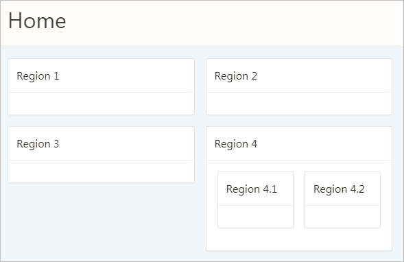

4.3 Developing Accessible Regions
Ensure the regions on a page provide sufficient navigational information for users of assistive technology.
- Accessible Page Structure
- Accessible Interactive Grid Regions
- Accessible Interactive Report Regions
- Accessible Classic Report Regions
- Accessible Tabular Forms Regions
- Accessible JET Chart Regions
Parent topic: Developing Accessible Apps
4.3.1 Accessible Page Structure
Users of assistive technology require a clearly defined structure on every page. After a page loads, screen reader users review all of the heading elements on the page. Correctly defined headings orientate your users by providing a structural overview of the page. You should nest page headings so that there is one H1 on a page to uniquely identify the page contents, then nest H2s, H3s, and so forth accordingly.
You achieve this structure with regions in Oracle Application Express. Follow one or more of the following guidances as best practices for structuring pages in your app.
H1 Headings
Include a breadcrumb region on your pages to create a unique H1. You can use the Create Application Wizard to generate breadcrumbs automatically based on the hierarchy of pages defined in the wizard, or you can configure the breadcrumbs in your app manually. By default, the last breadcrumb entry on a page is the H1.
Alternatively, use the Hero region template in Universal Theme. This region template renders the region title as the H1 text on the page by default, which is useful if your current app layout and design does not warrant breadcrumbs.
Tip:
Only use one Hero region per page to avoid creating more than one H1 element.
H2 Headings
After the H1, most region templates in Universal Theme render other content on the page with an H2 around the region title
H1: Charts
H2: region 1
H2: region 2
H2: region 3
H2: region 4H3 and Other Sub-Region Headings
Universal Theme does not automatically support headings beyond H2, such as when you have sub-regions nested within an H2 region.
Description of the illustration h2_regions_with_h3_regions.png
By default, Application Express applies H2s to nested sub-regions (regions 4.1 and 4.2 in the above example) in the Standard region template. This creates an accessibility problem because screen reader users may incorrectly believe that these sub-regions are of similar importance to the parent region or that the regions are not ancestral to the parent region.
H1: Charts
H2: region 1
H2: region 2
H2: region 3
H2: region 4
H2: region 4.1
H2: region 4.2To properly structure these sub-regions, you must duplicate the Standard region template, then use the Code Editor to manually replace the H2 tags with H3s in the template’s definition.
Tip:
To copy a region, see "Creating a New Template" in the Oracle Application Express App Builder User’s Guide and select the As a Copy of an Existing Template option.
Changing the sub-regions to H3s only affects the structure of the element (not the style), which is what we want for accessibility.
This results in the following heading structure:
H1: Charts
H2: region 1
H2: region 2
H2: region 3
H2: region 4
H3: region 4.1
H3: region 4.2Important:
-
While a copied template keeps the theme subscription (which enables you to refresh the theme when Oracle Application Express is upgraded), the copied template does not upgrade automatically on refresh. You may need to manually change or re-copy the template post-refresh if there are any markup changes in that template.
-
You must manually add an additional template for every deeper heading level in your app (H3, H4, H5...). We plan to make it easier to control the heading level without requiring an additional template in a future Oracle Application Express release.
Region Titles
You should define meaningful titles for most region types because Universal Theme uses the region title as the heading text for the region.
Descriptive titles are essential for accessibility. By default, titles are visible on screen. However, sometimes you may not want a title for a region, such as when sighted users can quickly discern the region’s content from surrounding page content at a glance. In such cases, you must still provide heading text for screen reader users. To make such a page accessible, select the region, in Property Editor open the Template Options, and set the Header attribute to Hidden but accessible.
Tip:
You can review and update all region titles in an app with the Grid Edit of all Region Titles page. You should review all titles for accuracy and meaning, especially regions with the same title on the same page which may be an issue depending on the context.
See Also:
"Accessing Page Specific Utilities" in the Oracle Application Express App Builder User’s Guide
Parent topic: Developing Accessible Regions
4.3.2 Accessible Interactive Grid Regions
Introduced in Oracle Application Express 5.1, interactive grids combine powerful reporting with grid-based editing in a single component. Users can access all interactive grid functionality with just a keyboard, enabling all users to navigate around the grid and edit their data using the keyboard. For a complete list of keyboard support in interactive grids, see Keyboard Shortcuts in Interactive Grid Regions.
Interactive grids do contain some accessibility bugs affecting screen reader users. All bugs are listed in the current VPAT.
Parent topic: Developing Accessible Regions
4.3.3 Accessible Interactive Report Regions
Data Table Accessible Label
You must enable screen reader mode to ensure the underlying data table rendered by interactive reports has an accessible label. Once enabled, Oracle Application Express generates the following SUMMARY text for the rendered data table:
Region = [region title], Report = [current saved report name], View = [current View], Displayed Rows Start = [current start of rows displayed, Displayed Rows End = [current end of rows displayed], Total Rows = [total number of rows]
This text identifies the data table, and therefore provides a great deal of contextual information to users of assistive technology.
Edit Icon Link Text
When creating a Report and Form, Oracle Application
Express generates the links between the two pages to allow you to edit specific records. The link text generated for all rows is Edit by default. You should make this text a meaningful label so that screen reader users (who listen to all the links on the current page) can understand the purpose of the link and where it takes them. The link text should be specific to the current row in the report. For example, for a report of customers, the link text could be Edit Customer: SMITH.
You can define the link text of an interactive report region by selecting the Attributes node, then in the Property Editor expand the Link column, set Link Column to Link to Single Row View or Link to Custom Target, and update the alt text in the Link Icon field.
Because there is no visible link text used, the link uses the inline image’s alt text as the text for the link. Note that you can use a substitution string such as #CUSTOMER_NAME# to target the column that best identifies the current row.
See Also:
"Editing Interactive Report Attributes" in the Oracle Application Express App Builder User’s Guide
Parent topic: Developing Accessible Regions
4.3.4 Accessible Classic Report Regions
Data Table
By default, Oracle Application Express generates SUMMARY text equal to the region title. This identifies the data table to users of assistive technology.
Note:
Unlike interactive reports, classic reports do not provide any additional information about the report state. This may limit your app’s functionality.
Edit Link Text
When creating a Report and Form, Oracle Application
Express generates the links between the two pages to allow you to edit specific records. The link text generated for all rows is Edit by default. You should make this text a meaningful label so that screen reader users (who listen to all the links on the current page) can understand the purpose of the link and where it takes them. The link text should be specific to the current row in the report. For example, for a report of customers, the link text could be Edit Customer: SMITH
You can define the link text of an interactive report region by selecting the Attributes node, then in the Property Editor expand the Link column, set Link Column to Link to Single Row View or Link to Custom Target, and update the alt text in the Link Icon field.
Because there is no visible link text used, the link uses the inline image’s alt text as the text for the link. Note that you can use a substitution string such as #ENAME# to target the column that best identifies the current row.
Note:
Although classic report regions support column headers in the report, currently Oracle Application Express does not support the ability to define a row header column in the report. Row headers are important for accessibility of data tables because screen readers announce the row header when navigating to a new row in the report (in the above example, that would be the ENAME value). See the VPAT for more details and the related bug number.
Parent topic: Developing Accessible Regions
4.3.5 Accessible Tabular Forms Regions
Tabular forms provide simple multi-row editing capability in your apps.
Data Table
By default, Oracle Application Express generates SUMMARY text equal to the region title. This identifies the data table to users of assistive technology.
Use as Row Header
Specify if a column should be used as the heading for the row. Including the column value can greatly improve accessibility for form fields rendered in the tabular form. When specified, Oracle Application
Express uses the Row Header together with the Column Header to render unique labels for the form fields in the report in the following format: <Column Header> : <Row Header>
For example, you define the ENAME column as the Row Header for a report on the EMP table. For a row where ENAME is "'JONES," the label for the Salary field in that row would be Salary : JONES. This approach enables a screen reader user to navigate by the form fields in the report and still understand which form fields relate to which row.
Parent topic: Developing Accessible Regions
4.3.6 Accessible JET Chart Regions
Oracle Application Express 5.1 introduced charts based on the Oracle JET Data Visualization components (JET charts). Releases prior to 5.1 used charts based on AnyChart, where there were many accessibility issues.
For more information about accessibility of Oracle JET Data Visualization components including support for keyboard and touch, see the Oracle JET documentation.
The following sections detail some chart settings that are particularly useful for ensuring chart accessibility.
Chart Title
The chart title displays in the chart region next to the chart. It is also the accessible label for the chart page section. In Page Designer, the chart title is defined in the chart Attributes node.
If there is only one chart displayed within a region, consider hiding the region title to avoid visual duplication. You can hide the region title by changing the Header region appearance setting in the Template Options dialog to Hidden but accessible. This removes the region title from the page but preserves the heading for assistive technologies (if users scan the current headings on the page to orientate themselves, they can perceive this title).
Tooltip
The tooltip displays when the mouse hovers over a specific chart section or the keyboard has focus on this section. In addition, the tooltip is the accessible label for that section of the chart. For example, when screen reader users navigate around the chart sections, this tooltip is announced.
-
Adjust the other attributes displayed in the Tooltip group in Page Designer. This allows you to control display of Series Name, Group Name, Value, and Label information where applicable for your chart. For example, if the chart only has one series, then you may want to exclude the series name in the tooltip, so you would set Show Series Name to No.
-
For a highly customized tooltip, set a column in your database table to be used as the source for the tooltip. You can configure this on the individual Series node nested under the chart in the Rendering tree.
Parent topic: Developing Accessible Regions